01 / 05★ PICKED
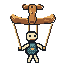
Front / level
Separate small leg rocker behind the long head-and-hand bar. The neutral pose.
Main bar + rocker visible
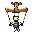
16 redraw
Five views of a hand-shaped control: rounded tips with cut end grain, lengthwise timber streaks and a small knot. Solid color clusters carry the shape; sparse ordered pixels only bridge shadow edges. Dedicated 16px silhouettes.

Separate small leg rocker behind the long head-and-hand bar. The neutral pose.

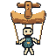
Nose down. A broad sunlit top face and compressed dark front edge.
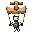
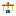
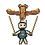
Nose up. Thin top highlight, wide underside, grip set behind the crossbar.
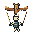
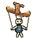
One end lifted and receding; the stepped top and side faces change along the span.
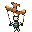
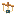
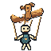
Opposite three-quarter view. The handle, end grain and two faces trade places.
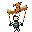
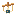